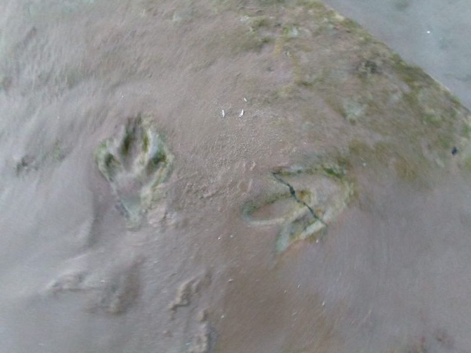
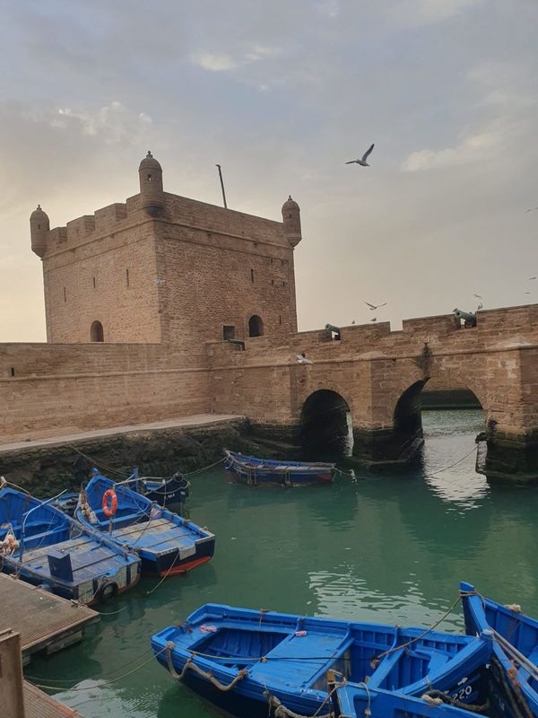
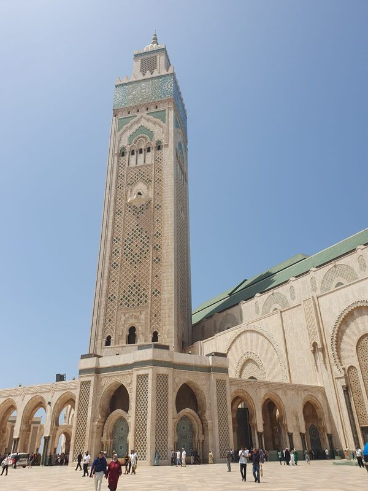
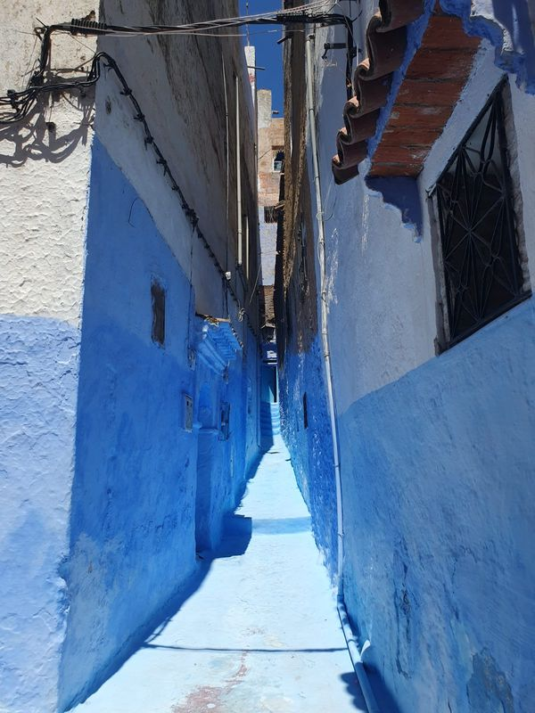
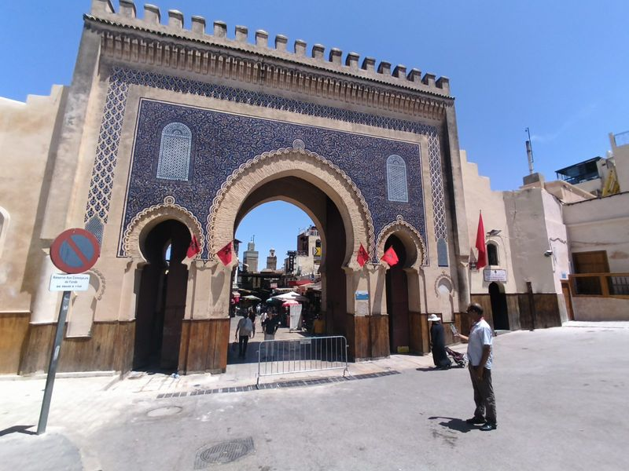
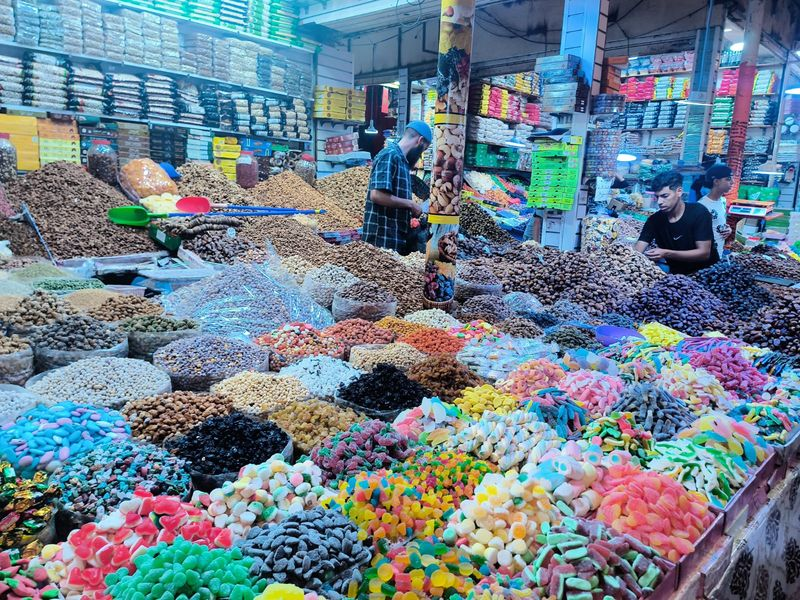
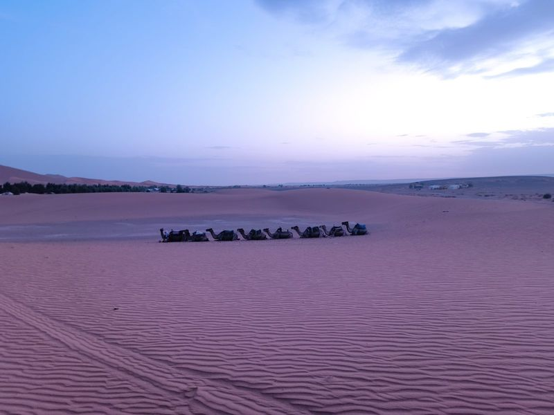
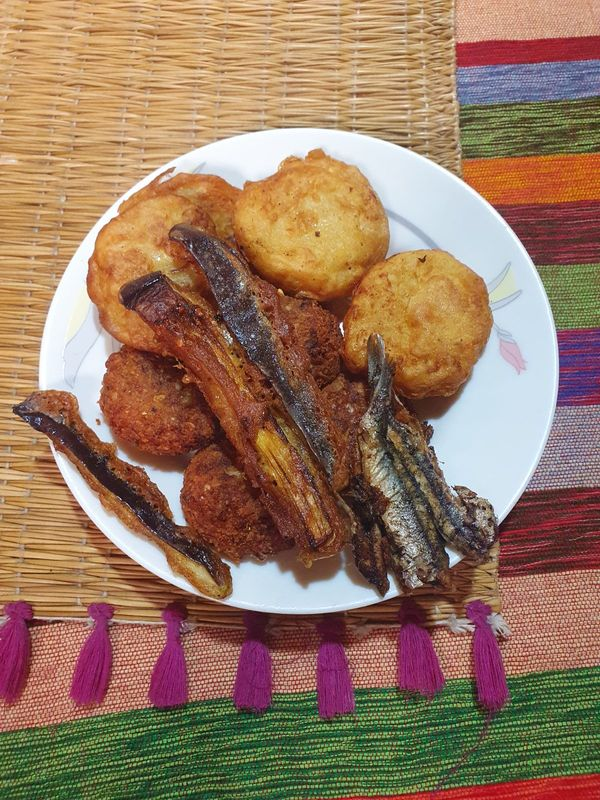

DOBRODRUHA
Dobrodruzi, ne turisté.
Maroko, jaké doopravdy je
Čtrnáct dní malé výpravy: spíme v medinách, jíme, kde jedí místní, surfujeme na Atlantiku, hledáme trilobity a spíme pod hvězdami na Sahaře. Dva čeští průvodci řeší jazyk, plán i bezpečí.
ZÁLOHA 25 000 KČ · DO 20. 9. JI VRACÍME CELOU, BEZ OTÁZEK
Předem prověření účastníci
SKLÁDÁME SKUPINU TAK, ABY SI SEDLAZáloha vratná do 20. 9. 2026
V PLNÉ VÝŠI, BEZ UDÁNÍ DŮVODUPrůvodci na telefonu
+420 702 967 187 · 24/7 BĚHEM VÝPRAVYKudy pojedeme
Přilétáme do Marrákeše, ale nespíme tam, jedeme rovnou k oceánu, protože chceme začít mořem, ne největším ruchem země. Marrákeš si necháváme na konec, kdy už budeme mít co nakupovat a odkud je kousek na ranní letiště.
Začínáme u oceánu
Kurz surfování s instruktorem: za tři dny se na prkno postaví i úplný začátečník. A v pobřežních skalách u Anzy stopy dinosaurů staré 85 milionů let; jdete po pláži a šlapete vedle nich.

Přístav, hradby, šneci
Bílo-modré přístavní město. Rybu si vyberete z bedny přímo na trhu a k tomu babbouche, šnečí polévka z ulice. Většina si netroufne; většina z těch, co si troufnou, si dá druhou.

Den o islámu
Mešita Hassana II. s minaretem 210 metrů nad Atlantikem, jedna z mála v Maroku, kam smějí i nemuslimové. K prohlídce hodina výkladu: co je pět pilířů, proč se volá k modlitbě, jak vypadá den věřícího.

Modré město bez davů
Přijedeme na západ slunce a ráno máme uličky jen pro sebe, než dorazí autobusy. Dvě prázdné hodiny tu vydají za celý den.

Spíme uvnitř mediny
Největší středověká medina světa: devět tisíc uliček, kam nesmí auta. Barvírny a koželužny Chouara, dílny mosazníků, večer skutečný místní hammam.

Nejdelší přejezd
Cedrový les s volně žijícími opicemi magot, oběd v Mideltu, sestup palmovými oázami údolí Ziz. V autě strávíme velkou část dne. Říkáme to na rovinu; krajina za to stojí.

Noc, na kterou se nezapomíná
Duny až 150 metrů. Odpoledne čtyřkolky, na velbloudech za západem slunce, sandboarding a večeře u ohně s berberskými bubny. Spíme ve stanovém kempu; v noci je kolem osmi stupňů.

Trh nomádů a vlastní trilobit
Nedělní trh, kam se sjíždí celé okolí: datle, kozy, osli, žádné autobusy. A pole u Alnifu, kde vám místní půjčí kladívko: kdo si najde fosilii starou 400 milionů let, veze si domů něco, co se nedá koupit.

Velké finále
Nejdelší palmová oáza Maroka, hliněná pevnost známá z Gladiátora a přejezd Vysokého Atlasu. Poslední den celý v Marrákeši: souky, hammam a nákupy, schválně na konci, ať je netaháte přes celou zemi.

Kostra programu je pevná: noclehy a zaplacené vstupy se nemění. Uvnitř dne je ale prostor: když se na trhu rozjede rozhovor, nikam nespěcháme.
Dobrodruzi, ne turisté
Turista přijede odškrtnout seznam a odjede s fotkami míst, kde nikdy doopravdy nebyl. My jedeme zemi zažít, i za cenu menšího pohodlí.
Fosilie koupená v obchodě, zabalená v celofánu.
Kladívko od Maročana a trilobit, kterého si vyhrabete vlastníma rukama.
Ryba z hotelového bufetu.
Ryba, kterou si vyberete z bedny na trhu v Essaouiře a kterou vám ugrilují na místě.
Hotel s bazénem na okraji města.
Riad uvnitř mediny. Ráno vyjdete ze dveří rovnou do devíti tisíc uliček.
Chcete program den po dni?
Pošleme vám podrobný itinerář v PDF: časy, přejezdy, noclehy a co si sbalit.
ŽÁDNÝ NEWSLETTER · JEN PROGRAM A MAX. 2 PŘIPOMÍNKY TERMÍNU
Odesláno. Program máte v e-mailu do pár minut. Kdyby nepřišel, mrkněte do spamu.
Kde spíme a co jíme
Kde to jde, pronajímáme celý riad nebo malý hotel jen pro naši skupinu: žádní cizí lidé, večer je nádvoří naše. Spí se ve sdílených dvou- až čtyřlůžkových pokojích; kdo jede sám, bydlí s někým stejného pohlaví bez příplatku. Tři noci spíme pod stanem: dvě u Sahary, jednu u laguny na pobřeží. Není to evropský hotelový standard. Je to lepší: je to skutečné Maroko.
Jídlo je v ceně po celou dobu: snídaně, obědy i večeře. Jíme tam, kde jedí místní: tajine, kuskus, harira, ryby přímo z trhu. Vegetariánskou nebo jinou úpravu zařídíme, když o ní víme předem. Sami si platíte jen alkohol.



Kdo s vámi pojede
Cesta dobrodruha vznikla z cesty, kterou jsme projeli Maroko na vlastní pěst, bez cestovky a bez itineráře z katalogu. Byla to jedna z nejsilnějších cest, jaké jsme zažili. A došlo nám, že většina lidí, kteří by tohle chtěli, se tam sama nikdy nevydá. Tak je tam vezmeme my.
Průvodci jsme dva schválně: jeden vede program, druhý hlídá lidi. Když někdo onemocní, jeden s ním jede k lékaři a druhý pokračuje se skupinou. Nikdy nejste bez pomoci.
Zdeněk Tejkl
VEDENÍ VÝPRAVYProcestoval 31 zemí a v pěti z nich žil, včetně Liberlandu. Anglicky na úrovni C2, základy francouzštiny, španělštiny a makedonštiny; student ekonomie. K jeho největším dobrodružstvím patří indická svatba v Jaipuru a cesta stopem z Prahy do Španělska.
Miroslav Žák
ŘIDIČ A PÉČE O SKUPINUJede s námi jako řidič a druhý průvodce. Bývalý policista, procestoval přes 70 zemí; nejvíc si zamiloval Srí Lanku.
Zvýhodněná cena platí při objednání do 1. 9. 2026, poté 75 000 Kč. Záloha 25 000 Kč hned při objednání, doplatek do 28. 9. 2026.
V ceně je
- zpáteční letenka včetně tax a odbaveného zavazadla
- 14 nocí (riady, hotely, 3 noci v kempu)
- plná penze: snídaně, obědy, večeře
- vlastní minibus s řidičem
- dva čeští průvodci
- licencovaní místní průvodci ve Fésu a Marrákeši
- všechny vstupy z programu
- kurz surfování s vybavením
- velbloudi, čtyřkolky a sandboarding
- hammam (tradiční marocké lázně)
- pojištění léčebných výloh
V ceně není
- alkohol
- pojištění storna (doporučujeme, sjednáme)
- spropitné
- vlastní nákupy
- samostatný pokoj (na vyžádání)
Žádné povinné příplatky na místě. Žádné „fakultativní výlety", bez kterých by program nedával smysl. Co je v programu, je zaplacené. A za jednolůžko se u nás nepřiplácí.
ZÁLOHA DO 20. 9. VRATNÁ V PLNÉ VÝŠI
Zálohu do 20. 9. vracíme celou. Bez otázek.
Jsme nová značka, a proto jsme pravidla nastavili ve váš prospěch: když si to do 20. září rozmyslíte, z jakéhokoli důvodu nebo úplně bez důvodu, vrátíme vám celých 25 000 Kč do sedmi dnů. Do té doby z vaší zálohy neutratíme ani korunu.
Telefonát, pokud chcete
Máte dodatečné otázky? Nechte nám je ve formuláři dole na stránce a do 24 hodin si zavoláme. Kdo má jasno, jde rovnou na přihlášku.
Dotazník a záloha
Tlačítkem Chci jet otevřete dotazník. Vyplníte ho a zaplatíte zálohu 25 000 Kč; do 20. 9. ji vracíme celou, doplatek do 28. 9.
Dokumenty
Následně dostanete všechny podklady: vaše pojištění, podrobný program, doporučený seznam k sbalení a další.
Seznámení skupiny
Online se seznámíte s prověřenou skupinou ostatních dobrodruhů, aby si parta sedla ještě před odletem.
Odjezd
Pak už se odjíždí. Příští stanice: Maroko.
Je to pro vás?
Pojeďte, pokud…
- už jste objeli Evropu a chcete něco odvážnějšího, ale ne úplně sami
- jedete sami a nevadí vám sdílený pokoj
- chcete vidět, jak lidé opravdu žijí, ne jen památky
- unesete, že se plán občas změní
- jste zvědaví na jídlo, víru, řemesla i lidi
Nejezděte, pokud…
- chcete ležet u bazénu s all inclusive
- potřebujete mít každou hodinu neměnnou
- nesnesete teplo, prach a delší přejezdy
- čekáte evropský standard hotelů
- nechcete respektovat místní zvyklosti v oblékání a chování
Nepíšeme to, abychom byli drsní. Čtrnáct dní v jednom minibuse je dlouhá doba, a proto se s každým před cestou osobně poznáme. Nepojedete mezi náhodné lidi; pojedete s lidmi, kteří si tuhle cestu vybrali ze stejného důvodu jako vy.
Na co se ptáte nejčastěji
Naopak, přesně pro vás to děláme. Většina skupiny jede sama. Ubytujeme vás s někým stejného pohlaví, kdo je na tom stejně, a za samostatné lůžko se nepřiplácí. Čtrnáct dní v jednom minibuse udělá své; z většiny skupin je na konci parta.
Nemusíte. Dva čeští průvodci jsou s vámi celou dobu, od pasové kontroly po smlouvání na trhu. Kdo si chce zkusit poradit sám, může; kdo ne, nemusí nikdy.
Nejde o sportovní výkon. Chodí se po nerovné dlažbě a písku, přes den bývá kolem 25 °C. Nejnáročnější je desátý den: přejezd k Sahaře zabere v autě většinu dne, s pauzami zhruba osm hodin. Říkáme to dopředu; krajina cestou za to stojí.
Maroko je turisticky nejstabilnější země severní Afriky. Jezdíme vlastním minibusem s řidičem, kterého známe, ceny máme domluvené předem a v medinách chodíme s licencovanými průvodci. Průvodci jsme dva, takže skupina není nikdy bez doprovodu, a na telefonu jsme 24 hodin denně.
Riady jsou čisté a udržované, ale nečekejte řetězcový hotel: koupelny bývají sdílené na pokoj, teplá voda někdy chvíli nabíhá. Tři noci spíme ve stanech se spacáky. Pije se jen balená voda. Je to součást cesty, ne její vada.
Pojištění léčebných výloh máte v ceně. Máme seznam ověřených lékařů na trase a kopie všech dokladů. Kdyby bylo hůř, jeden průvodce jede s vámi a druhý zůstává se skupinou.
Přes den příjemně, kolem 25 °C. V poušti a v horách v noci klesá pod deset stupňů; teplá vrstva je povinná položka v seznamu, který od nás dostanete.
Standard je sdílený pokoj bez příplatku. Kdo chce být sám, řekne nám to a spočítáme příplatek podle ubytování.
Do 20. 9. vracíme zálohu celou bez udání důvodu. Po tomto datu platí storno podmínky dle VOP; doporučujeme pojištění storna, které vám rovnou sjednáme.
Jídlo i program jsou zaplacené. Počítejte s penězi na alkohol, suvenýry a spropitné. Konkrétní doporučení včetně směny peněz dostanete v infopacketu tři týdny před odletem.
Máte otázky? Zavoláme vám.
Nechte nám dotaz a telefon. Do 24 hodin zavoláme, projdeme vaše otázky a na rovinu si řekneme, jestli vám výprava sedne. Telefonát k ničemu nezavazuje.
Už máte jasno? Rovnou vyplňte přihlášku.
ODLET PRAHA · 28. 10. 2026 · NÁVRAT 11. 11. 2026Díky, ozveme se do 24 hodin.
Zavoláme z čísla +420 702 967 187. Uložte si ho, ať víte, že jsme to my. Kdybyste mezitím měli jasno, rovnou vyplňte přihlášku.